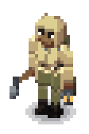
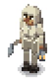
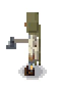
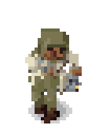

The Gatebreaker
The Gatebreaker is an elite of Deepway (level 44).
The Gatebreaker is an elite of Deepway (level 44).
In the game
In the game The Gatebreaker is level 44, elite (a group's fight). It is found in The Broken Gates. It can drop The Gatebreaker's Maul (always), Seal-Breaker Leggings (25%) and Seal-Breaker's Pads (25%).
Quests
Quests that ask for it: The Gatebreaker (quest) (behind the level cap).
Gallery







